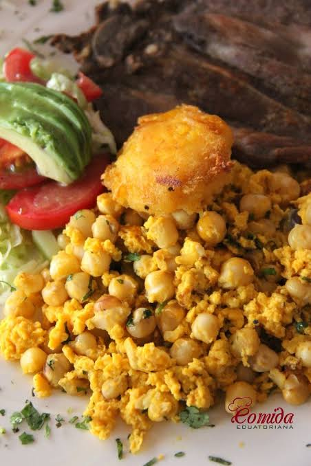
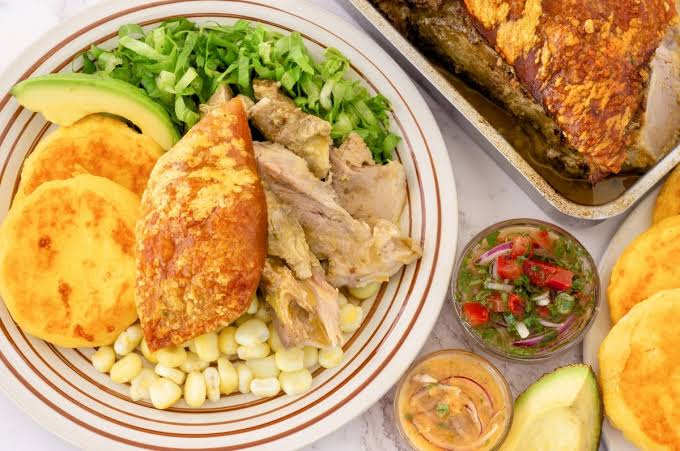
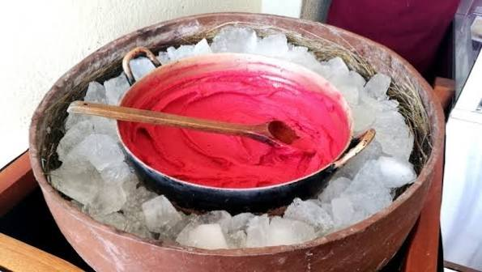

Mote cocido salteado con huevo, cebolla y hierbas. Es un desayuno clásico de la región.
Patrimonio Cultural de la Humanidad
La comida de Cuenca mezcla tradición andina y sabores caseros. Muchos platos usan ingredientes de la región como el maíz, el mote, la papa, el cerdo y las hierbas, y se preparan igual que hace muchos años.
Los mercados de la ciudad, como el 10 de Agosto y el 9 de Octubre, son un buen lugar para probar estas preparaciones a precios accesibles y conocer de cerca la vida diaria de los cuencanos.

Mote cocido salteado con huevo, cebolla y hierbas. Es un desayuno clásico de la región.

Cerdo horneado lentamente y servido con mote, papas y ensalada. Es un plato fuerte muy popular los fines de semana.

Helado artesanal de frutas, preparado en una paila de bronce removida a mano.
En la siguiente tabla se resumen cuatro platos que representan la cocina de la ciudad:
| Plato | Ingrediente principal | Tipo |
|---|---|---|
| Mote pillo | Mote y huevo | Desayuno |
| Hornado | Cerdo | Plato fuerte |
| Cuy asado | Cuy | Plato fuerte |
| Helado de paila | Frutas | Postre |
Entre las bebidas tradicionales destacan el canelazo, preparado con aguardiente y canela, y el café o chocolate caliente, perfectos para el clima fresco de la ciudad. De postre, además del helado de paila, son populares los dulces tradicionales como los quesillos con miel.